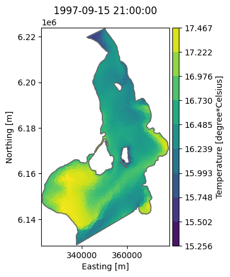
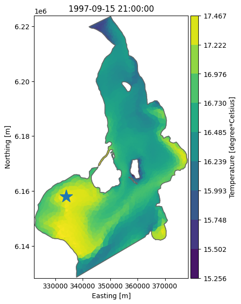
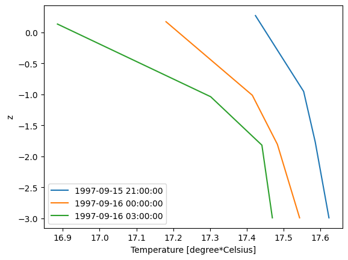
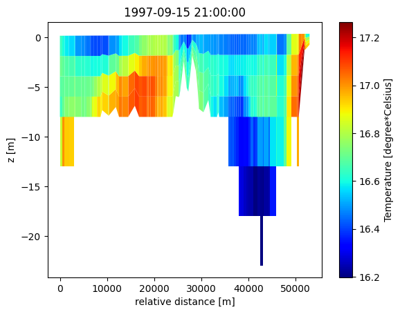

Dfsu 3D#
Layered dfsu files comes in several different shapes:
3D
2D Vertical slice (transect)
1D Vertical profile
Two layer systems exist:
sigma (terrain and surface following coordinates)
sigma-z (sigma layers at the top and fixed z-layers at the bottom)
In sigma-layered files, all columns has the same number of layers. In sigma-z files, the number of z-layers can be different for different columns.
Layered dfsu files have a “hidden” first dynamic item called “zn” with the (dynamic) z-positions of the nodes.
Read the MIKE IO dfsu documentation for more info.
import mikeio
3D Sigma-z#
dfs = mikeio.open("data/oresund_sigma_z.dfsu")
dfs
<mikeio.Dfsu3D>number of nodes: 12042
number of elements: 17118
projection: UTM-33
number of sigma layers: 4
max number of z layers: 5
items:
0: Temperature <Temperature> (degree Celsius)
1: Salinity <Salinity> (PSU)
time: 1997-09-15 21:00:00 - 1997-09-16 03:00:00 (3 records)
Apart from the normal dfsu properties, layered dfsu geometries have these properties:
g = dfs.geometry
print(f"Maximum number of layers: {g.n_layers}")
print(f"Number of sigma layers: {g.n_sigma_layers}")
print(f"Maximum number of z-layers: {g.n_z_layers}")
print(f"The layer number for each 3d element: {g.layer_ids}")
print(f"List of 3d element ids of surface layer: {g.top_elements}")
print(f"List of 3d element ids of bottom layer: {g.bottom_elements}")
print(f"List of number of layers for each column: {g.n_layers_per_column}")
print(f"The 2d-to-3d element connectivity table for a 3d object: {g.e2_e3_table[:3]} ...")
print(f"The associated 2d element id for each 3d element: {g.elem2d_ids}")
Maximum number of layers: 9
Number of sigma layers: 4
Maximum number of z-layers: 5
The layer number for each 3d element: [4 5 6 ... 6 7 8]
List of 3d element ids of surface layer: [ 4 8 12 ... 17106 17111 17117]
List of 3d element ids of bottom layer: [ 0 5 9 ... 17102 17107 17112]
List of number of layers for each column: [5 4 4 ... 5 5 6]
The 2d-to-3d element connectivity table for a 3d object: [array([0, 1, 2, 3, 4]) array([5, 6, 7, 8]) array([ 9, 10, 11, 12])] ...
The associated 2d element id for each 3d element: [ 0 0 0 ... 3699 3699 3699]
The associated 2D geometry for a 3D file can be outputted in this way:
geom2d = g.geometry2d
geom2d
Flexible Mesh Geometry: Dfsu2D
number of nodes: 2090
number of elements: 3700
projection: UTM-33
geom2d.n_elements
3700
Layers in a 3D file#
print("Number of elements per layer (5 z-layers, 4 sigma layers):")
for j in range(g.n_layers):
dsl = dfs.read(layers=j)
print(f"Layer {j}: {dsl.n_elements}")
Number of elements per layer (5 z-layers, 4 sigma layers):
---------------------------------------------------------------------------
AttributeError Traceback (most recent call last)
Cell In[6], line 4
2 for j in range(g.n_layers):
3 dsl = dfs.read(layers=j)
----> 4 print(f"Layer {j}: {dsl.n_elements}")
AttributeError: 'Dataset' object has no attribute 'n_elements'
The bottom layer is a list of the elements with the lowest id for each column For sigma-z files it is NOT the same as layer 1.
dfs.read(layers="bottom")
<mikeio.Dataset>
dims: (time:3, element:3700)
time: 1997-09-15 21:00:00 - 1997-09-16 03:00:00 (3 records)
geometry: Dfsu2D (3700 elements, 2090 nodes)
items:
0: Temperature <Temperature> (degree Celsius)
1: Salinity <Salinity> (PSU)
Surface layer of 3D file#
ds = dfs.read(layers="top")
ds
<mikeio.Dataset>
dims: (time:3, element:3700)
time: 1997-09-15 21:00:00 - 1997-09-16 03:00:00 (3 records)
geometry: Dfsu2D (3700 elements, 2090 nodes)
items:
0: Temperature <Temperature> (degree Celsius)
1: Salinity <Salinity> (PSU)
ds["Temperature"].plot();

max_t = ds['Temperature'].values.max()
print(f'Maximum temperature in top layer: {max_t:.1f}C')
Maximum temperature in top layer: 17.5C
Find position of max temperature and plot#
Use numpy argmax() method to find the element with the largest value.
max_elem_id = ds['Temperature'].isel(time=0).values.argmax()
top_element_coordinates = dfs.geometry.element_coordinates[dfs.geometry.top_elements]
max_x, max_y = top_element_coordinates[max_elem_id][:2]
max_x, max_y
(np.float64(333934.08510239207), np.float64(6158101.508170851))
ax = ds['Temperature'].plot(figsize=(6,7))
ax.plot(max_x, max_y, marker='*', markersize=20);

Read 1D profile from 3D file#
Find water column which has highest temperature and plot profile for all 3 time steps using dynamic z information.
dsp = dfs.read(x=max_x, y=max_y) # select vertical column from dfsu-3d
dsp['Temperature'].shape # 3 timesteps and 4 layers (no z-layers at this position)
(3, 4)
dsp['Temperature'].plot();

Read vertical slice#
dfs = mikeio.open("data/oresund_vertical_slice.dfsu")
dfs
<mikeio.Dfsu2DV>number of nodes: 550
number of elements: 441
projection: UTM-33
number of sigma layers: 4
max number of z layers: 5
items:
0: Temperature <Temperature> (degree Celsius)
1: Salinity <Salinity> (PSU)
time: 1997-09-15 21:00:00 - 1997-09-16 03:00:00 (3 records)
g = dfs.geometry
print(g.bottom_elements[:9])
print(g.n_layers_per_column[:9])
print(g.top_elements[:9])
[ 0 5 10 15 20 24 28 32 36]
[5 5 5 5 4 4 4 4 4]
[ 4 9 14 19 23 27 31 35 39]
da = dfs.read(items="Temperature")[0]
da.plot();
